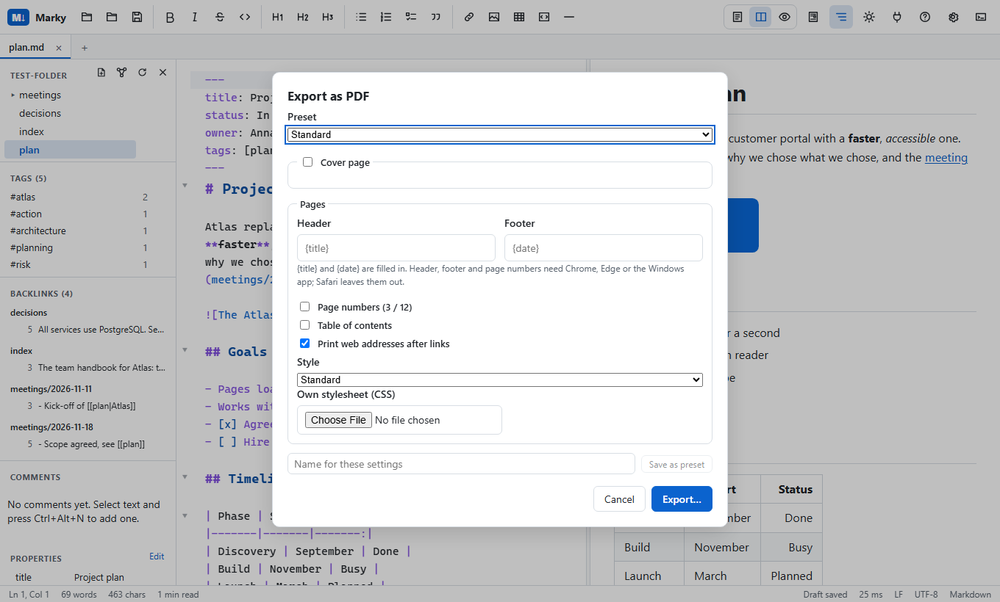
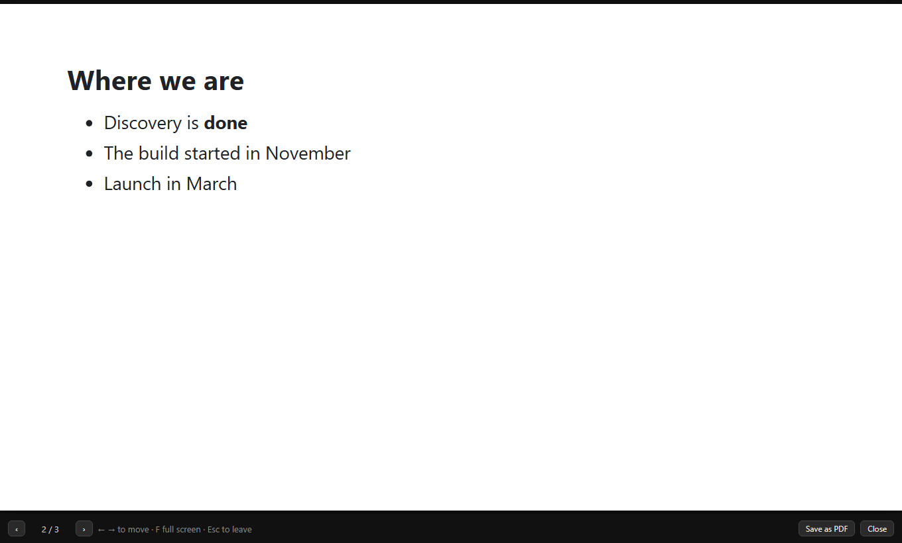
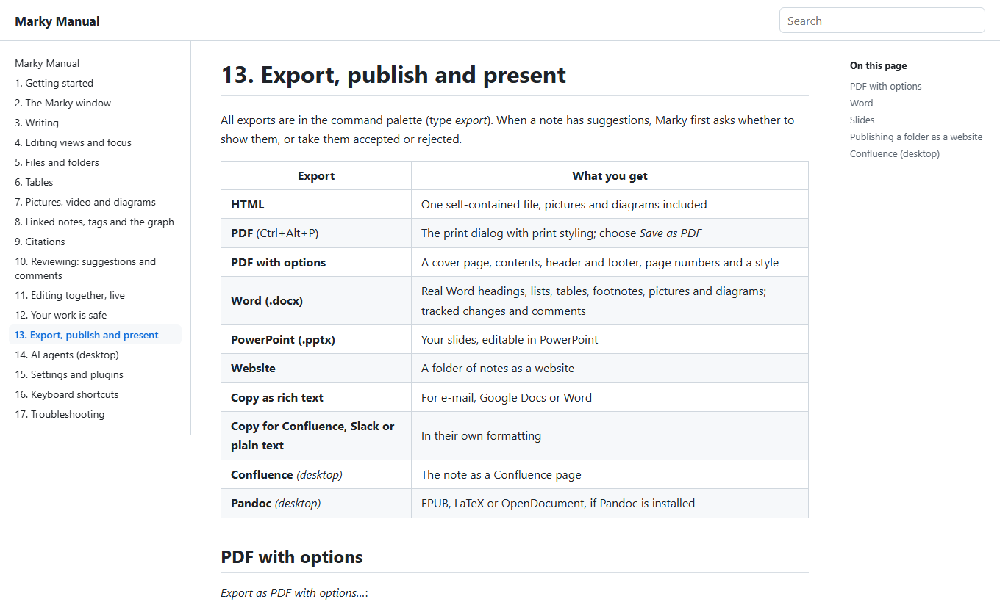

13. Export, publish and present
All exports are in the command palette (type export). When a note has suggestions, Marky first asks whether to show them, or take them accepted or rejected.
| Export | What you get |
|---|---|
| HTML | One self-contained file, pictures and diagrams included |
| PDF (Ctrl+Alt+P) | The print dialog with print styling; choose Save as PDF |
| PDF with options | A cover page, contents, header and footer, page numbers and a style |
| Word (.docx) | Real Word headings, lists, tables, footnotes, pictures and diagrams; tracked changes and comments |
| PowerPoint (.pptx) | Your slides, editable in PowerPoint |
| Website | A folder of notes as a website |
| Copy as rich text | For e-mail, Google Docs or Word |
| Copy for Confluence, Slack or plain text | In their own formatting |
| Confluence (desktop) | The note as a Confluence page |
| Pandoc (desktop) | EPUB, LaTeX or OpenDocument, if Pandoc is installed |
PDF with options
Export as PDF with options…:

- a cover page with title, subtitle, author, date and a logo;
- a table of contents;
- header and footer text (
{title},{date}fill themselves in) and page numbers; - a style: standard, serif, compact or minimal, plus your own CSS file;
- save it all as a preset; Report and Academic are built in.
Word
Headings become Word's heading styles, so Word's navigation and table of contents work. Code is set in Consolas, math as TeX text, diagrams as pictures, citations as text with the list of references. With a Word template (Word template for exports…: your organisation's .docx or .dotx), exports get its headers, footers, logo, fonts and styles. Put {{content}} in the template where the text belongs; {{title}}, {{author}} and {{date}} are filled in.
Slides
Every --- on a line of its own (between blank lines) starts a new slide, as in Marp.
- Present (F5): ← → or click to move, F for full screen, Esc to leave. It starts at the slide your cursor is in. A slide with just a heading is centred like a title page; long slides shrink their text to fit.
- Export slides as PDF: one slide per 16:9 page.
- Export slides as PowerPoint (.pptx): a file you can keep editing in PowerPoint, Keynote or Google Slides. The first heading becomes the slide's title, lists become bullets (with their levels), code a box in Consolas, tables real tables, pictures and diagrams pictures.

Publishing a folder as a website
Publish folder as a website… turns the open folder into a website: every note becomes a page. This manual is made that way.

- Pages:
guide/intro.mdbecomesguide/intro.html, with the folder as navigation on the left, the page's contents on the right, search at the top and previous / next at the bottom. Light or dark, following the reader's system; on a phone the navigation folds into a ☰ menu. - The front page is
index.mdorREADME.md; without one, Marky makes a list of all pages. A page's title istitle:from its properties, else its first heading. - Everything works: links between notes (also
[[wikilinks]]) point at the pages, pictures and media files are copied, diagrams are drawn, citations filled in. Suggestions show accepted, comments are left out. - Left out: notes with
publish: falseordraft: true, encrypted notes, and folders whose name starts with_. - Where it goes: Save as .zip, or Write to _site in the folder. Put the files on any web server, or on GitHub Pages: push the contents of
_siteto agh-pagesbranch (or adocs/folder) and switch on Pages in the repository's settings. Marky adds the.nojekyllfile GitHub needs.
Confluence (desktop)
Publish to Confluence…: the note becomes a page in Confluence Cloud or Data Center, with its pictures and diagrams attached. Publishing again updates the same page, and Marky asks before replacing changes made in Confluence. You give Marky an API token once; it's kept in the system keychain.